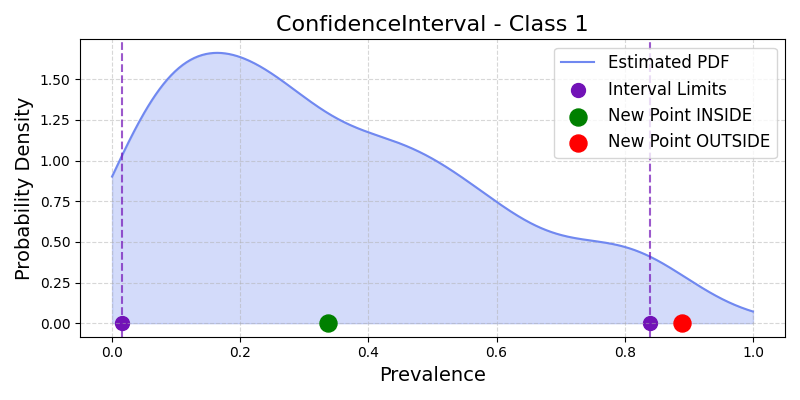
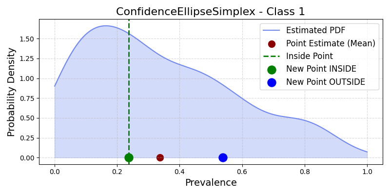
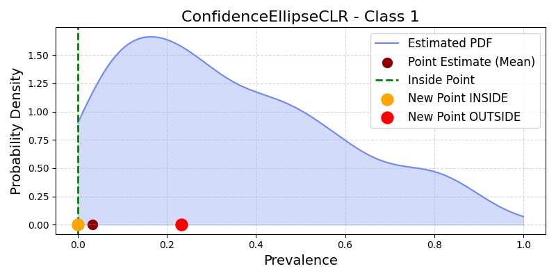

6. Confidence Regions for Quantification#
This guide details the main types of confidence regions for prevalence estimates in quantification, as implemented in mlquantify.confidence. It covers the principles, mathematical definitions, attributes, and usage examples for each region type.
For advanced bootstrap-based strategies (e.g., model-based and population-based), see mlquantify.meta.AggregativeBootstrap, which provides detailed implementations.
6.1. General Concept#
A confidence region for quantification is a subset in the prevalence space that, with probability \(1-\alpha\), contains the unknown true class prevalence vector \(\pi^*\) of the test set. The width and shape of this region express uncertainty around the point estimate. Typical regions are defined as \(CR_\alpha\) such that
where \(\pi^{\ast}\) is the true prevalence vector.
Confidence region types differ by how they model joint uncertainty across class prevalences:
Confidence intervals (by percentiles)
Confidence ellipse in simplex (multivariate)
Confidence ellipse in CLR space (geometry-aware)
All regions are constructed from \(m\) bootstrap resamples of prevalences for \(n\) classes: \(X \in \mathbb{R}^{m \times n}\).
API Reference: BaseConfidenceRegion (in mlquantify.confidence).
6.2. Percentile-Based Confidence Intervals#
Implements independent confidence intervals for each class based on percentiles (nonparametric, assumes independence).
ConfidenceInterval
{kind=link}

Illustration of Confidence Intervals for the positive class#
Definition: For a desired confidence \(1-\alpha\), compute interval bounds \([L_i, U_i]\) for each class \(i\) from the empirical \(\alpha/2\) and \(1-\alpha/2\) percentiles.
Mathematical region:
\[\begin{split}CI_\alpha(\pi) = \begin{cases} 1 & \text{if } L_i \leq \pi_i \leq U_i, \forall i=1,...,n \\ 0 & \text{otherwise} \end{cases}\end{split}\]Limitations: Assumes class independence; region is a hyper-rectangle which can fall outside the probability simplex.
Example:
from mlquantify.confidence import ConfidenceInterval
import numpy as np
X = np.random.dirichlet(np.ones(3), size=200)
ci = ConfidenceInterval(X, confidence_level=0.9)
print(ci.get_region()) # returns (I_low, I_high)
print(ci.contains([0.3, 0.4, 0.3])) # array([[True]])
6.3. Confidence Ellipse in Simplex#
Constructs a multivariate confidence ellipse in the simplex space, enforcing joint uncertainty and correlations.
ConfidenceEllipseSimplex
{kind=link}

Illustration of Confidence Ellipse in Simplex space for the positive class#
Definition: Derives an ellipse around the mean prevalence vector, with axes scaled by covariance, thresholded via chi-squared statistic.
Mathematical region:
\[\begin{split}CE_\alpha(\pi) = \begin{cases} 1 & \text{if } (\pi-\mu)^T\Sigma^{-1}(\pi-\mu) \leq \chi^2_{n-1}(1-\alpha) \\ 0 & \text{otherwise} \end{cases}\end{split}\]- Attributes:
\(\mu\): sample mean of bootstrap prevalences
\(\Sigma^{-1}\): inverse covariance matrix
\(\chi^2_{n-1}(1-\alpha)\): chi-squared cutoff
Limitations: Assumes normality of prevalence estimates (may not hold); region may partially extend beyond the simplex.
Example:
from mlquantify.confidence import ConfidenceEllipseSimplex
import numpy as np
X = np.random.dirichlet(np.ones(3), size=200)
ce = ConfidenceEllipseSimplex(X, confidence_level=0.95)
print(ce.get_point_estimate())
print(ce.contains(np.array([0.4, 0.3, 0.3])))
6.4. Confidence Ellipse in CLR Space#
Models the geometry of the simplex by transforming prevalence vectors using the Centered Log-Ratio (CLR) transformation before constructing the ellipse.
ConfidenceEllipseCLR
{kind=link}

Illustration of Confidence Ellipse in CLR space for the positive class#
CLR transformation: \(T: \Delta^{n-1} \rightarrow \mathbb{R}^n\), with
\[T(\pi) = [\log(\pi_1 / g(\pi)), \ldots, \log(\pi_n / g(\pi))], \quad g(\pi) = (\prod_i \pi_i)^{1/n}\]Region definition:
\[\begin{split}CT_\alpha(\pi) = \begin{cases} 1 & \text{if } (T(\pi) - \mu_{CLR})^T \Sigma^{-1} (T(\pi) - \mu_{CLR}) \leq \chi^2_{n-1}(1-\alpha) \\ 0 & \text{otherwise} \end{cases}\end{split}\]Attributes: As above, but all computations done in the transformed CLR space.
Advantages: Adapts to the compositional nature of prevalence estimates, keeping the region well-behaved within the simplex.
Example:
from mlquantify.confidence import ConfidenceEllipseCLR
import numpy as np
X = np.random.dirichlet(np.ones(3), size=200)
clr = ConfidenceEllipseCLR(X, confidence_level=0.9)
print(clr.get_point_estimate())
print(clr.contains(np.array([0.4, 0.4, 0.2])))
6.4.1. References#
Moreo, A., & Salvati, N. (2025). An Efficient Method for Deriving Confidence Intervals in Aggregative Quantification. Istituto di Scienza e Tecnologie dell’Informazione, CNR, Pisa.
See also: Section 3.3 and Equations (1)-(3) in the reference above.